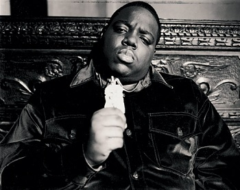

What is Rap?

Rap is a musical form of vocal delivery that incorporates "rhyming, rhythmic speech".
It is performed or chanted, usually over a backing beat or musical accompaniment.
The components of rap include "content" (what is being said), "flow" (rhythm/rhyme), and "delivery" (cadence, tone).
Rap differs from spoken-word poetry in that it is usually performed off-time to musical accompaniment.
Rap is a primary ingredient of hip hop music commonly associated with that genre,
however, the origins of rap predate hip-hop culture by many years.
Rap is usually delivered over a beat, typically provided by a DJ, turntablist, beatboxer,
or performed a cappella without accompaniment.
Stylistically, rap occupies a gray area between speech, prose, poetry, and singing.
The word, which predates the musical form, originally meant "to lightly strike",
and is now used to describe quick speech or repartee.
The word had been used in British English since the 16th century.
It was part of the African American dialect of English in the 1960s meaning "to converse",
and very soon after that came to denote the musical style.
The word "rap" is so closely associated with hip-hop music that many writers use the terms interchangeably.
The History of Rap
Kurtis Blow
World Cafe celebrates Black History Month with a special on the birth of rap,
in which rapper Kurtis Blow, DJ Grand Wizard Theodore, and museum curator Jim Fricke help host David Dye explore the birth of hip-hop.
Kurtis Blow was the first rapper to sign with a major label, the first to earn a certified gold single,
and the first to tour internationally.
Grand Wizard Theodore was the DJ who invented scratching, utilizing turntables as an instrument to be played.
Jim Fricke is the editor of Yes Yes Y'all: The Experience Music Project Oral History of Hip Hop's First Decade,
and was the curator of the "Hip-Hop Nation" exhibit at Seattle's Experience Music Project.
Together, they tell the story of rap's early years in the 1970s.
Rap as a genre began at block parties in New York City in the early 1970s,
when DJs began isolating the percussion breaks of funk, soul, and disco songs and extending them.
MCs tasked with introducing the DJs and keeping the crowd energized would talk between songs,
joking and generally interacting with the audience. Over time, it became common for the MCs (or rappers, as they soon became known)
to talk and rhyme over and in sync with the music.
Initially dismissed as a fad,
rap music proved its commercial viability in 1979 with the release of The Sugarhill Gang's "Rapper's Delight,"
and then again in 1980 with Kurtis Blow's "The Breaks," a Top 5 hit that eventually went gold.
What We Need to Know About Rap
Rap is a complex mix of influences, including elements of speech, prose, poetry, and song.
Learn to rap by listening to the masters, learning rhythms, and practicing your own lyrics.
You don't always have to write your own lyrics if you struggle to do so.
Instead, go search for a writer or ask your friends to write something down for you,
because not all people are good at both rapping and writing.
Same with producing the instruments, you don't have to master instruments that they use in Hip Hop music,
find someone that can produce a beat for you, if the beat suits you,
then you can start to spit some BARS (a slang term that they use for rapping)
Rap Legends
There are many Legends in the Rap industry, it's almost impossible to name every single one of them,
but here are some of people's favorites
1. 2Pac
Tupac Shakur, better known as
2Pac was an American rapper and actor. He is widely considered one of the most influential rappers of all time.
Shakur is among the best-selling music artists, having sold more than 75 million records worldwide.
Much of Shakur's music has been noted for addressing contemporary social issues that plagued inner cities,
and he is considered a symbol of activism against inequality.
2. The Notorious B.I.G.

Christopher George Latore Wallace, better known by his stage name
The Notorious B.I.G. was an American rapper. Rooted in East Coast hip hop and particularly gangsta rap,
he is cited in various media lists as being one of the greatest rappers of all time.
Wallace became known for his distinctive laid-back lyrical delivery, offsetting the lyrics' often grim content.
His music was often semi-autobiographical, telling of hardship and criminality, but also of debauchery and celebration.[3]
3. 50 Cent

Curtis James Jackson III, better known as
50 Cent is an American rapper, actor, and businessman. Born in the South Jamaica neighborhood of Queens,
Jackson began pursuing a musical career in 2000, when he produced Power of the Dollar for Columbia Records. However,
days before the planned release, he was shot, and the album was never released. In 2002,
after 50 Cent released the mixtape Guess Who's Back? he was discovered by Eminem and signed to Shady Records,
under the aegis of Dr. Dre's Aftermath Entertainment and Interscope Records.
New Age Rappers
Of course as time goes on, we have new generation of rappers coming from left, right and center.
Rap has also evolved in a different way, here are a couple of New Age Rappers that are popular in 2023.
1. Lil Baby
Dominique Armani Jones, known professionally as
Lil Baby, is an American rapper, singer, and songwriter.
He rose to mainstream fame in 2017 following the release of his mixtape Perfect Timing.
His debut studio album, Harder Than Ever (2018), spawned the Billboard Hot 100 top 10 single "Yes Indeed" (with Drake).
In 2018, he released two more mixtapes: Drip Harder (with Gunna), which contained the single, "Drip Too Hard",
that reached #4 on the Billboard Hot 100, and was later certified Diamond by the Recording Industry Association of America (RIAA),
and Street Gossip, which reached #2 on the US Billboard 200.
2. J. Cole

Jermaine Lamarr Cole, better known as
J. Cole is an American rapper and record producer.
Born on a military base in Germany and raised in Fayetteville, North Carolina,
Cole initially gained recognition as a rapper following the release of his debut mixtape, The Come Up, in early 2007.
Intent on further pursuing a musical career, he went on to release two additional mixtapes,
The Warm Up (2009) and Friday Night Lights (2010) both to critical acclaim, after signing to Jay-Z's Roc Nation imprint in 2009.
3. Kendrick Lamar

Kendrick Lamar Duckworth is an American rapper and songwriter.
Known for his progressive musical styles and socially conscious songwriting,
he is often considered one of the most influential hip hop artists of his generation.
Born and raised in Compton, California, Lamar began his career as a teenager performing under the stage name K.Dot.
He quickly garnered local attention which led to him signing a recording contract with Top Dawg Entertainment (TDE) in 2005.
2 Types of Rap in 2023
As time goes by, we got introduced to a new type of raps, including Mumble Rap and Lyrical Rap.
Let me explain what both of those are.
Mumble Rapping
Lil Pump
Mumble rap is a loosely defined genre of hip hop that largely spread on the online audio distribution platform
SoundCloud in the 2010s. The term implies a mumbling or unclear vocal delivery by artists,
and may generally refer to rappers who do not share the genre's traditional emphasis on lyricism.
In 2018, the phrase "Soundcloud rappers" has also been used to refer to this new generation of young rappers,
replacing the denigrating label "mumble rappers".
While the term has been widely criticized as inaccurate or as a derogatory term, some artists have reclaimed the term.
Some have defended the style as a new phase in the evolution of the genre.
Lyrical Rap

Eminem
Lyrical Rap is basically the type of Rap that was introduced since the beginning.
People call rappers "Lyrical" when they are very wordy or technical in their craft or putting their bars together.
Rhyme schemes, extended metaphors, wordplay, etc.